The Case
Plaintiffs, filability, both constitutional prongs, remedy and certification, objections, and the examination as the closing invitation.
Contents · Back: Page One — The Claim · Page Two — What Happened
Each summary below points at a chapter rather than replacing it. Nine of the ten chapters on this page are unpublished, so these summaries are the only public account of them; the examination chapter is published in full and is linked from its section.
Sovereign and Public-Fiduciary Plaintiffs
3 minutes| Why this is in front of you |
|---|
| If you are deciding whether to bring this case, this is the chapter that tells you which client can carry it. The procurement-injury theory is the reason a government plaintiff survives a Lujan motion that a consumer class would not, and the attorney general section is the only place in either volume that addresses who can fund a multi-year constitutional case to judgment. Note what the chapter gives away: the coalition it envisions is partisan, the injury figures are estimates disclosed as estimates, and one of its seven trade associations is on record against the position. Page Two’s ripeness chapter established that these plaintiffs can reach a merits ruling; this one establishes which of them a court will recognize as injured. |
Page Two established that the courthouse door is open. This chapter answers who walks through it first, and it answers only that. It is explicit that standing is not motive: why any of these plaintiffs would want to be the name on the complaint is deferred to a chapter in the companion volume, and the merits are deferred to the two prong chapters summarized below.
The bar is Lujan v. Defenders of Wildlife (1992) and its generalized-grievance rule, and the chapter names four distinct ways past it as a set — sovereign standing, public-fiduciary procurement standing, occupational-injury standing, and vested-right takings standing. It develops the first two and hands the others to the chapters that hold them. The sovereign door rests on Massachusetts v. EPA (2007) and on Alfred L. Snapp & Son v. Puerto Rico (1982), which defines a sovereign’s quasi-sovereign interest to include the economic well-being of its residents generally. Clapper v. Amnesty International USA (2013) is named as the case policing the concrete-and-imminent line.
The chapter’s own contribution is what it calls the procurement-injury theory: a government that buys patrol cars, school buses, fire engines and road graders at wall-inflated prices holds an injury that is dollar-denominated, recurring on a fixed budget cycle, and visible on a public ledger before any complaint is filed. The claim is deliberately modest — the harm to the county is the same harm as the household’s, only particular.
Seven categories follow, each given a standing posture, a fact pattern, a trade body, a line on reachability, and the campaign’s letter-generation tool where one exists. The state attorney general ranks first not on standing but on institutional litigation capacity — the chapter is candid that almost no other plaintiff can fund a case through a circuit split to certiorari, and equally candid that the realistic multi-state coalition will not be bipartisan. Tribal nations carry three doorways plus the federal trust responsibility, and the chapter fixes the operational point at 345 federally recognized tribes in the contiguous forty-eight states, each deciding independently, with no central authority able to veto a tribal council. Governors occupy the same rung as attorneys general and are ranked below them for a reason the chapter states plainly as exposure to capture. The elected sheriff is called the cleanest proprietary injury in the book, resting on Printz v. United States (1997), and the chapter is precise about where the posture fails: Alaska has no county sheriff, Connecticut abolished the office in 2000, Delaware’s sheriffs run no law-enforcement fleet, and Hawaii and Rhode Island appoint rather than elect — leaving 45 states. School districts, public transit authorities and the governmental subset of volunteer fire departments close the list, the last with a fact pattern of a fire engine at roughly $250,000 on a patent-expired design against roughly $750,000 in current compliance form, across some 18,000 departments.
Three concessions are on the page rather than buried. The population-scaled procurement estimate is a standing instrument and not a budget audit, and the chapter says so twice. The national trade bodies are not uniformly allies — the American Public Transportation Association actively supports stricter transit-bus emissions standards, which is the opposite of the book’s position, and the chapter reports it rather than eliding it. And three of the seven categories have no letter-generation tool built or specified; the gap is flagged, not filled. Mayors of council-manager cities and charitable-corporation fire departments are excluded from the docket by the same test that admits the seven, and redirected to the amicus brief.
Direct and Associational Plaintiff Categories
4¾ minutes| Why this is in front of you |
|---|
| This is the client list, and it is organized the way a litigator would organize it rather than the way an advocate would. Each category arrives with the regulation that supplies its causal line, which is what turns a price complaint into a pleadable claim, and the chapter ranks them by how short that line is. Two things are worth your attention: the Hunt third prong is the pressure point on every associational filing here and the chapter concedes it, which is why the recommended posture pairs an individual owner with an association rather than relying on the association alone; and the exclusions are reasoned rather than diplomatic, which tells you the standing analysis was actually run. If you represent a trade body in any of these fields, the fact pattern for your client is already written. |
Eleven categories, the other two doorways, and a single organizing observation: in each of these trades the regulated machine is not an overhead line but the enterprise itself. A laundromat is a room of washers. An earth-moving contractor sells the use of an excavator by the hour. That is why the injury is particular rather than diffuse, and it is the whole of the chapter’s standing theory on the direct side.
The associational side runs through Hunt v. Washington State Apple Advertising Commission (1977) and its three conditions. The chapter is clear about which one does the work: the first two are satisfied without difficulty by every trade body named, and the third — that neither the claim nor the relief require individual member participation — is where a government brief will press. Its answer is the posture of the whole case: a declaratory judgment asks for one ruling of law applying to all members at once, with no member-by-member accounting. From that follows the chapter’s ranking rule. A direct individual plaintiff escapes the third prong entirely and is therefore the more durable posture; a pure-associational posture ranks below it; the strongest filing pairs them.
The second ordering principle is the statutory hook, and four recur. The cleanest is 42 U.S.C. § 6295(o)(1), which names clothes washers as a covered product and governs the laundromat. EPA Part 1039, the Tier 4 nonroad compression-ignition standard finalized in 2004 and fully phased in by 2015, governs earth-moving, construction and farm equipment. EPA Part 1054 governs the small spark-ignition engines of commercial landscaping. And 10 C.F.R. Part 431 governs the regulated plant of restaurants, hotels, and much of the hospital. A category whose hook names a single product, where the business is nothing but that product, has the shortest causal line in the book; the chapter says so and ranks accordingly.
The independent trucker anchors the pattern from his own chapter: the EPA’s 2007 aftertreatment mandate adds fifteen to twenty-five thousand dollars to a new Class 8 truck and a single diesel particulate filter replacement five to ten thousand more, all imposed on engine platforms — the Caterpillar C15, the Cummins N14, the Detroit Series 60 — whose core patents expired years ago, with the Owner-Operator Independent Drivers Association and its roughly 150,000 members available to carry the claim associationally. Seven, eleven and one make nineteen, which is the full plaintiff architecture.
The price evidence is where the chapter is sharpest. A 220-horsepower Shantui SD22 bulldozer sells on global markets for roughly twenty-five to forty-nine thousand dollars against a comparable Caterpillar D6 listing in the United States between $649,000 and $796,000 — a multiple of thirteen to twenty-five — with a 21-ton excavator showing a gap of three to eight times; the foundational bulldozer architecture traces through a documented 1980 Komatsu license and the foundational excavator patents expired between the early 1990s and the mid-2010s. A 44-horsepower Mahindra tractor sells in India for roughly $7,300 against $27,992 for a comparable Mahindra model here; an Indian combine at fifteen to forty-three thousand dollars has an American counterpart from $400,000 well past a million.
A commercial washer-extractor runs from about three thousand dollars to above twenty thousand, and a working laundromat is a floor of twenty, thirty or more of them. Every category arrives with its trade body named, dated and sized — the Coin Laundry Association for roughly 30,000 storefronts, the National Restaurant Association for more than 380,000 locations, the American Hospital Association for roughly 5,000 of some 6,000 hospitals, the National Apartment Association for some 11.6 million apartment homes, and so through the list. Rideshare is the exception that proves the chapter’s ranking rule: well over 1.7 million drivers and no national association of their own, which makes the direct filing rather than the associational one the natural vehicle there.
The healthy-lighting category carries the strongest merits posture of the eleven for a historical reason the chapter states in one sentence: Edison’s foundational filament patents expired around the turn of the twentieth century and the incandescent bulb was manufactured and bought freely for more than 110 years afterward, until the 2007 Energy Independence and Security Act and the Department of Energy rules that followed in 2022 and 2024 effectively withdrew it from general sale. The relevant organizations are named — the Epilepsy Foundation, DarkSky International, the American Academy of Environmental Medicine, the Center for Environmental Therapeutics, the BrightFocus Foundation, the National Psoriasis Foundation — with the assessment that their boards are more likely to join an amicus brief than to lead.
The candor is distributed throughout rather than confined to a closing section. The apartment owner’s pass-through to tenants is raised as the government would raise it and answered as a damages question rather than a standing defect, with the chapter conceding that commercial-landlord sympathy is the weakest among the housing plaintiffs. The transportation builders’ association is noted to have been chaired during this period by a retiring Caterpillar group president whose portfolio was earth-moving equipment, which the chapter calls the bootleggers-and-baptists tension in plain view and says should be surfaced with the membership rather than left unstated. Two groups that feel the wall acutely are excluded outright: the individual car buyer, whose loss is real and not justiciable, and the commercial fleet buyer, where the chapter names both the doctrinal problem and the framing cost of a multinational rental corporation as lead plaintiff. A coordinating nonprofit for amicus participation is described as proposed and not yet formed, with the note that nothing depends on it. And of the eleven categories, only two have a deployed letter-generation tool; the rest are marked built, planned, or absent, one by one.
The Trucker’s Burden: A Constitutional Brief for the American Cab
4¼ minutes| Why this is in front of you |
|---|
| If you take one plaintiff from this book, this is the one: the largest injured class, the most thoroughly documented injury, an organised constituency in OOIDA and the trucking associations, and a foreword author who drives. The chapter is drafted as a brief rather than as an argument, and it is precise about the relief sought — the standards time-shift to the platform year the remanufactured truck mimics; they do not lapse, and no regulation is suspended. It is also the cleanest instance of the blockade pattern summarised on Page Two: the wall went up before the patents expired, so the public's right came into existence into an environment that already forbade its exercise. |
The book's one fully worked plaintiff brief, and the chapter that argues the trucker leads the associational category rather than merely belonging to it.
Scale is part of it. Roughly three and a half million American drivers, between 587,000 and 923,000 of them owner-operators, two to three million running Class 8 under the federal aftertreatment mandate, and behind them tens of thousands of family-owned fuel, milk, refuse, septic and concrete firms, each buying the same over-priced trucks on the same expired-patent engines. But the chapter's case for primacy is not headcount. The owner-operator owns the asset, so the cost lands on him rather than on an employer, and it recurs rather than resolving at purchase: the American Trucking Associations puts aftertreatment at thirteen percent of lifetime maintenance cost, with a filter replacement running $2,000 to $8,000 and diesel exhaust fluid consumed at every fill for the life of the engine.
What the injury actually consists of is the point a reader is likeliest to miss. Nearly every owner-operator on the road today drives a post-2000 truck, aftertreatment stack and all. That is not evidence against the claim; it is the claim. He drives one because nothing else is lawful to build. The rig he would choose — the million-mile Peterbilt 379 behind a Caterpillar C-15, the Kenworth W900 with a Cummins N14, the Freightliner on a Detroit Series 60 — cannot be newly manufactured at any price, however many are still running on the interstates today. Gord Magill, the third-generation trucker who wrote this book's foreword, put that aspiration to the author during the drafting: the dream is a newly built pre-2000 truck. The chapter's contention is that the aspiration is not nostalgia but a constitutional entitlement, presently denied. The modern truck at $161,850 is not the owner-operator's choice; it is his only lawful option. What he has been deprived of is not the truck he owns but the one he would buy.
The claim is correspondingly narrow, and the chapter states its limits before it states its demand. It does not argue that regulation must stop when a patent expires, and it does not argue against the diesel particulate filter on an engine designed around one. What it asks is that the standards time-shift rather than lapse: a truck newly manufactured on pre-2000 patent-expired technology should answer to the standards its platform was first certified under, which is the same grandfathering every truck of that vintage already on the road receives. Federal law grants that grandfathering three separate ways already: EPA's authority under 42 U.S.C. § 7521(a)(1) reaches only “new" engines; 49 U.S.C. § 30112(b)(9) exempts vehicles over twenty-five years old from current safety standards; and the Low Volume Motor Vehicle Manufacturers Act permits 325 replicas per manufacturer per year of designs at least twenty-five years old.
That the pre-2000 engines were already clean is load-bearing rather than incidental. By 1999 new heavy-duty diesels were eighty-three percent cleaner on particulate matter than the 1988 federal baseline, roughly ninety percent below the unregulated pre-1988 level, and half as polluting on nitrogen oxides as the engines of a decade earlier — achieved through engine design alone, with no filter, no exhaust gas recirculation and no exhaust fluid. The standard then held at 0.10 grams per brake horsepower-hour from 1994 through 2006 because engine design had reached its practical limit. The rule signed 20 December 2000 demanded 0.01, which engine design could not reach, and that is what bolted a filter onto every truck built from 2007 onward.
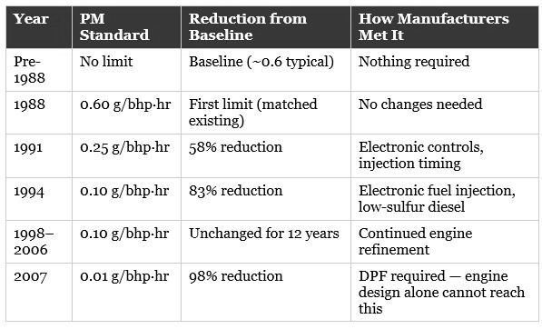
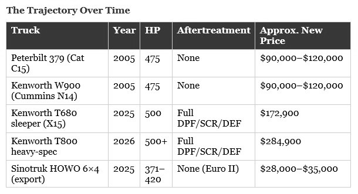
Both constitutional prongs run through the cab. The expired patents placed the design in the public domain; current-year certification does not burden the public's right to rebuild it but abolishes it, which is the Patent Clause injury. The chapter argues those same facts as a Fifth Amendment taking, under Ruckelshaus v. Monsanto (1984), holding intangible intellectual property to be protected property, and Lucas v. South Carolina Coastal Council (1992), holding a regulation that eliminates all economically viable use to be a per se taking. It records that no litigant has yet asked a federal court to apply either case to the regulatory cancellation of an expired patent.
The chapter closes by setting three remedial paths against one another — EPA guidance, the Diesel Truck Liberation Act (S. 3007), and a constitutional ruling — and showing that only the third survives a change of administration.
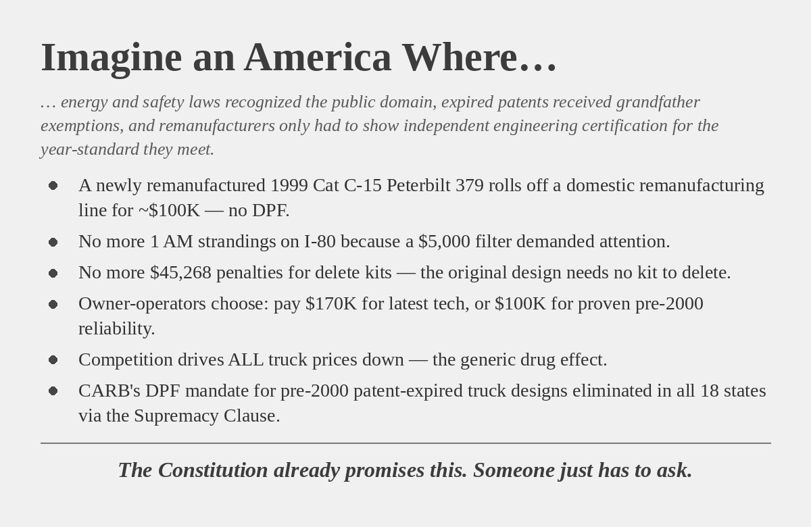
The Filable Case: Why 2026 and Not Before
3½ minutes| Why this is in front of you |
|---|
| This is the chapter that tells you whether you are early or late, and its answer is neither. It also disposes of the inference a court will draw on its own from fifty-five years of silence — that a claim nobody brought is a claim nobody could win — by showing that three of the doctrines the case depends on postdate 2007 and the load-bearing one postdates June 2024. The redressability material matters more than it looks: it converts the government’s safety rebuttal from an argument you must answer with assurances into an empirical claim you can meet with two named crash programs’ published ratings. |
This chapter answers the question a lawyer asks second, after why nobody noticed: if the wall went up in 1970, why has nobody sued? Its answer is not that the bar was asleep. It is that for most of those fifty-five years the case could not have been filed in a form a court could rule on and a plaintiff could win, and it puts the missing pieces on a calendar.
Three clocks. The access clock begins with the Declaratory Judgment Act of 1934 at 28 U.S.C. §§ 2201–2202, sustained in Aetna Life Insurance Co. v. Haworth, 300 U.S. 227 (1937), and is completed only recently: Massachusetts v. EPA, 549 U.S. 497 (2007) for the sovereign plaintiff, MedImmune, Inc. v. Genentech, Inc., 549 U.S. 118 (2007) for the party paying under protest, and Susan B. Anthony List v. Driehaus, 573 U.S. 149 (2014) for the credible threat of enforcement. Ninety years to assemble, with the last load-bearing piece barely eleven years old. Justiciability is treated as a hand that has always read the right hour and named only for completeness, with a stated judicially manageable standard: does the regulation make it impossible to remanufacture a patent-expired design?
The keystone is dated to the morning of June 28, 2024, when Loper Bright Enterprises v. Raimondo, 603 U.S. 369 (2024), overruled Chevron. The chapter is careful about what that did and did not settle — not whether the agencies exceeded their authority, which is the next chapter’s argument, but whether the court is free to decide the question for itself. West Virginia v. EPA (2022) is set beside it as the major-questions companion, and Sheetz v. County of El Dorado, 601 U.S. 267 (2024), is placed on the same calendar as the takings-side floor.
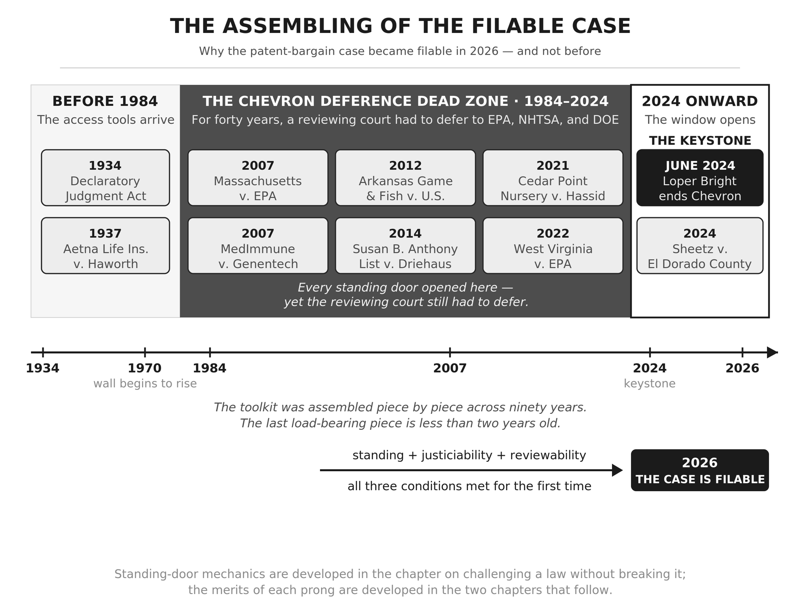
The second clock is the injury, which had to age into doctrinally significant scale: a wall now enclosing an estimated fifty-eight percent of durable-goods output, a pickup at $72,495, and a cumulative transfer on the order of twenty-two trillion dollars, roughly $3,385 a year from the average household. The chapter draws a narrow lesson from the figure rather than re-arguing it — magnitude is an element of the major-questions argument, so the injury grew into the doctrine waiting to receive it.
The third clock is redressability evidence, and it is the freshest. Roughly ninety countries manufacture patent-expired vehicles and equipment at a fraction of American prices; India’s Mahindra Thar, built on the long-expired Jeep CJ platform, sells for about twelve thousand dollars against a Wrangler’s forty-five thousand and more. The safety objection is met twice over, and the second answer is the one that does not depend on the first: Global NCAP rated the Thar four stars for adult and child occupant protection in November 2020, and Bharat NCAP rated the redesigned Thar ROXX five stars in November 2024, the first body-on-frame SUV to reach that mark under the Indian protocol. The lineage is proved not by the author’s reading of the patent record but by the brand owner’s own conduct — Jeep’s corporate owner took the Roxor to the International Trade Commission on trade dress rather than mechanical design, and won an import bar that a cosmetic redesign answered.
Two things keep the chapter honest. The pocket calculator is offered as the warning folded inside the evidence: its patents expired, its price collapsed by over ninety percent in real terms, and the manufacturing went overseas — a price collapse without trade protection relocates an industry rather than rebuilding one. And the title date is disclaimed. The chapter states that 2026 is not a magic date, that nothing turned at a particular midnight, and that a plaintiff filing in 2027 or 2028 files the same sound case; what 2026 adds over 2024 is doctrine settled by application in the lower courts and a plaintiff architecture that did not exist in finished form when Loper Bright came down.
The Patent Clause Prong: “Limited Times” as Constitutive Language
6¼ minutes| Why this is in front of you |
|---|
| This is the theory of the case, and it is the half that asks a court for a holding rather than a price. Read it for the second-depth argument in particular: it is structured so that you do not have to win a fight over the meaning of “new motor vehicle,” because the claim is that the result lies outside federal power however the statutes are read. The aggregation passage — that the Clause releases the invention as claimed and that the whole vehicle becomes the public’s when the last of its patents expires — is the premise the entire remedy rests on, and it is the premise a government brief will attack first. The chapter is explicit that this prong can be lost or bypassed entirely without touching the one that follows. |
The first of the two independent grounds the book calls the two suspenders. Its question is not whether the wall is unfair or expensive but whether the agencies that built it ever held the power to build it, and the chapter is disciplined about staying inside that question — the Fifth Amendment consequences of everything it establishes are routed forward to the next chapter and left there.
The argument turns on one distinction. Either “limited Times” is hortatory advice about how to use a patent power granted in full — the chapter calls this the decorative reading — or it is part of the description of the power itself, so that a grant of exclusivity without terminus is not the patent power misused but a different power the Constitution gave nobody. The chapter takes the constitutive reading and grounds it in Graham v. John Deere Co. (1966), where the Court described the Clause as both a grant of power and a limitation upon its exercise, and held that Congress may not overreach the restraints imposed by the stated constitutional purpose.
Three cases then fix what kind of thing a patent is, and therefore what kind of thing its expiration is. James v. Campbell (1882) held that a patent is property the government must pay to use. McCormick Harvesting Machine Co. v. Aultman (1898) held that once a patent issues, not even the Patent Office may revoke or cancel it — only a court may. Florida Prepaid v. College Savings Bank (1999) confirmed that patents are a species of property. The chapter turns the pair around: if an agency may not cancel a live patent, an agency surely may not, once the right has died on schedule, restore the manufacturer’s exclusivity by regulation and hold it there.
The public’s half is carried by four more: Scott Paper Co. v. Marcalus Manufacturing Co. (1945), that a private contract may not withhold the invention of an expired patent from public use; Sears, Roebuck & Co. v. Stiffel Co. (1964), that the patent-expired article may be made and sold by whoever chooses to do so; Bonito Boats v. Thunder Craft Boats (1989), that free exploitation of ideas is the rule and the patent the exception; and Kimble v. Marvel Entertainment (2015), that at expiration the unrestricted right to make and use the invention passes to the public. Eight holdings in all, which the chapter treats as one unbroken line across two centuries and many different majorities. It records that every Supreme Court citation in the book was independently checked, each URL resolved to the decision named and each quoted holding confirmed against the cited opinion in at least two independent legal reporters.
Two definitional moves do real work. The first reads “secure” as an act of force rather than a passive permission, supported by the First Congress directing that letters patent issue in the name of the United States and arming the right with a federal suit. The second is the Expired Patent Commons, defined by use rather than by paper: an invention has entered it only when an American may in fact pick it up and manufacture it, so a patent expired on paper that no one may lawfully build has not entered the commons at all. That definition is the load-bearing premise of both prongs.
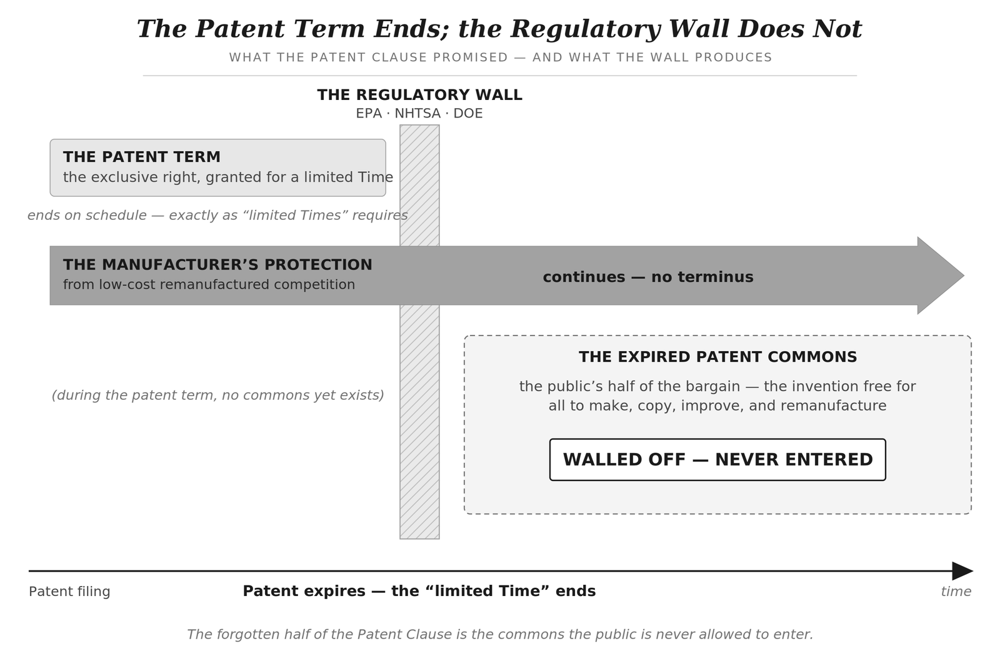
The mechanism is stated precisely, because imprecision invites an easy rebuttal. The patent expires and regulation never touches the patent term; what does not end is the original manufacturer’s protection from low-cost remanufactured competition, handed back by a rule that never mentions a patent. The chapter adds a third effect the patent itself never gave — pricing power on still-active products today, because the competitor who would have disciplined pricing in anticipation of expiration has been ruled out in advance — and puts the consumer price reduction from ending the wall at fifteen percent as a conservative floor.
The asymmetry section is the chapter’s sharpest, and it is also where it concedes most. Federal safety standards bind by manufacture date, so the incumbent’s article stays lawful to drive, sell and register for its full life after the patents expire, while the identical design built new by a member of the public is barred. The chapter argues the line is one of identity rather than danger — and then states, without hedging, that the remanufactured article is not as clean as a vehicle built to the current year’s standard and that the book does not pretend otherwise. Its narrower claim is that against the relevant benchmark, the very article the law already tolerates on the road, the remanufactured vehicle is at worst its equal.
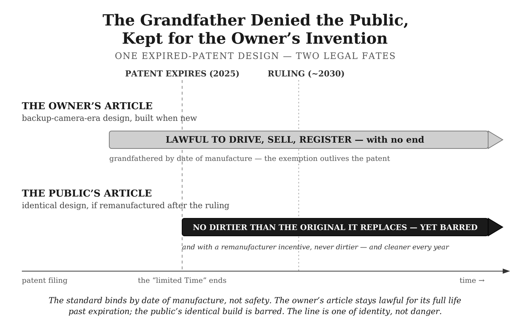
The power argument then runs at two depths. At the first, the wall fails as a matter of ordinary statutory reading: after Loper Bright Enterprises v. Raimondo (2024) a court reads “new motor vehicle” for itself, and under the major-questions doctrine of West Virginia v. EPA (2022) an agency claiming authority of vast economic and political significance must point to clear congressional authorization, which no statute supplies. At the second depth the statutes stop mattering. The chapter grants the agencies their most favorable reading of every statute they cite and argues the wall still fails, because Congress could not have authorized the result under any of its powers — an agency is a creature of Congress and cannot be delegated an authority its creator never held. The commerce power is real and the chapter does not dispute it, citing Wickard v. Filburn (1942) and the delegation permitted since J. W. Hampton, Jr., & Co. v. United States (1928); the argument is that a general power may not accomplish what a specific provision forbids.
Equality is developed as internal to the Clause rather than as a separate ground, and the chapter marks the boundary itself: this is not the Fourteenth Amendment’s equality, nor the parallel federal equality of Bolling v. Sharpe (1954), which would draw rational-basis review in the economic context and would not by itself defeat the wall. Five objections are then stated in their strongest form and answered — that the agencies regulate emissions and not patents; that patent and regulatory law are separate regimes; that the Clause limits only the patent power; that expired patents have always been subject to other law; and that the remedy would loosen environmental and safety protection. The fourth answer supplies the distinction the book relies on everywhere: a general law binds incumbent and entrant alike and hands the incumbent nothing, while the wall regulates the patent-expired product in a way only the incumbent can satisfy.
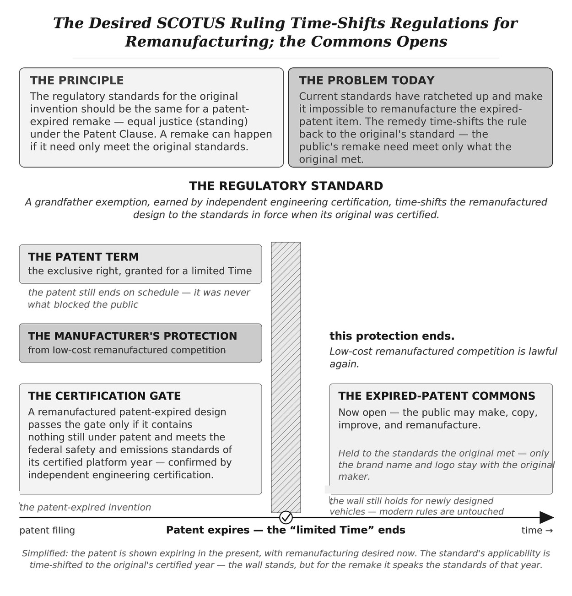
One further concession is placed deliberately. The chapter states that the wall is permanent against the agencies that built it and that the ratchet was designed to keep it so — and then fixes the limit of that permanence at the agencies’ own level, above which sits a court that can order it lifted.
The Takings Clause Prong: Property the Government Cannot Cancel for Free
5¼ minutes| Why this is in front of you |
|---|
| This is the prong that survives a loss on the other one, and it is the likelier route to a ruling: the chapter’s own prediction is that a court grants certiorari on both, decides on takings, and writes that it need not reach the structural question. Three places deserve your scrutiny because the chapter itself marks them — the step from the Court’s use of the word “property” in Singer to a Fifth Amendment interest, the extension of Allegheny Pittsburgh, and the extension of the tribal common-property cases. Each is flagged as the argument’s inference rather than a holding. Page Two’s account of the blockade and withdrawal patterns bears directly here: the withdrawal fact pattern, where a right was exercised for a century and then removed, is the stronger posture for this prong. |
The second suspender, and it opens by granting the government everything the first prong denies it. Suppose the structural argument fails, or a court never reaches it and decides on takings grounds alone: this argument grants the power and asks what the government owes for what it did with it. The chapter states plainly that it borrows no load-bearing premise from the chapter before it, which is the point of having two.
Three things have to be established in order — that the thing destroyed is property, that its destruction is a taking, and what follows — and the first is the one that takes work, because the public’s half is not as obviously property as the inventor’s patent. Three routes are offered. The nature of the right is the first: the right to make, use and sell a defined thing is the classic bundle, and the Court has used the noun itself — Singer Manufacturing Co. v. June Manufacturing Co. (1896) held that at expiration the right to make the thing formerly covered by the patent becomes public property, with Scott Paper (1945) and Bonito Boats (1989) saying the same in substance. The chapter immediately marks the limit: those were patent, trademark and assignor-estoppel cases, none of them held that the public’s interest is property the Fifth Amendment protects, and that step is the argument’s own.
The second route is Ruckelshaus v. Monsanto Co. (1984), which the chapter says the prong leans on hardest: a trade secret is intangible and is nonetheless property the Takings Clause protects, so an agency does not escape the Clause because what it appropriated had no physical form. The third is Tyler v. Hennepin County (2023), which closes the move the wall’s defenders will reach for — a government may not sidestep the Clause by disavowing traditional property interests, so a recent regulation declaring a long-recognized right worthless does not make it so.
The verb is then supplied by Pennsylvania Coal Co. v. Mahon (1922) and Justice Holmes’s rule that regulation going too far will be recognized as a taking. Two roads follow. Penn Central (1978) is the balancing test; Lucas v. South Carolina Coastal Council (1992) is the per se rule for a regulation that leaves property economically idle. The chapter is careful to name the branch it walks and the branch it does not: Loretto v. Teleprompter Manhattan CATV Corp. (1982) and the physical-occupation line, extended by Cedar Point Nursery v. Hassid (2021) and applied to personal property in Horne v. Department of Agriculture (2015), are described as the wider architecture the argument belongs to rather than the ground it stands on. The argument rides Lucas, on the definition the previous chapter fixed — the wall does not diminish the public’s right of access, it makes exercising it legally impossible — and then argues the Penn Central road as well, on the reasoning that a plaintiff is wise to win on both.
Four cases close the escape routes from the word “taken,” and the chapter lines them up as a set. Horne: the label “regulation” does not rescue an appropriation. Cedar Point: the appropriation of a right of access is read strictly. Arkansas Game & Fish Commission v. United States (2012): the effect on the property controls, not the formal category. Sheetz v. County of El Dorado (2024), decided unanimously: the Takings Clause contains no legislative exception, so a burden imposed by a statute of general application is as reachable as one imposed by an administrator — which matters because the wall is built entirely of general rules.
A separate section develops the inequality: American regulatory practice grandfathers vested rights as a matter of course — the old building, the lawfully purchased firearm, the professional license — and the vested right at the end of the patent term is the one right of its class that gets none. Allegheny Pittsburgh Coal Co. v. County Commission of Webster County (1989) supplies the shape, with Bolling v. Sharpe (1954) and Adarand Constructors v. Peña (1995) bridging from a county to the federal government. Here again the chapter flags its own step: those cases concerned racial segregation and federal contracting, and the extension to this asymmetry is the argument’s, not theirs.
The objections are answered in the same register. That a right of access is a mere expectancy proves too much, since James v. Campbell and Florida Prepaid make a patent property from issuance whether exercised or not. That “the public” is not a person is answered by the plaintiff chapters — the sheriff barred from buying remanufactured trucks, the farmer barred from the remanufactured tractor, the remanufacturer with a factory and no lawful design — with a second, offered route through United States v. Sioux Nation of Indians (1980) and Justice Cardozo’s four words in Shoshone Tribe v. United States (1937), that property need not be individually titled to be compensable. The chapter states that the tribal cases concerned Indian lands under treaty and that extending them is a step it asks a court to take, not one the cases have taken.
The largest concession is saved for last and is not really an objection at all. The chapter states, as law, that a takings plaintiff who proves her case wins compensation and not an injunction, citing First English Evangelical Lutheran Church v. County of Los Angeles (1987) for the proposition that the Clause does not prohibit taking but conditions it. Its answer is arithmetic rather than doctrine: just compensation measured against twenty-two trillion dollars cumulative and roughly $3,385 per household per year, continuing for as long as the wall stands, is an obligation no Treasury can carry. So the plaintiff pleads in the alternative and asks the court to enjoin the wall unless and until compensation is provided, and the government is left two doors of which only one is affordable. The prong does not order the wall down; it makes keeping it too expensive.
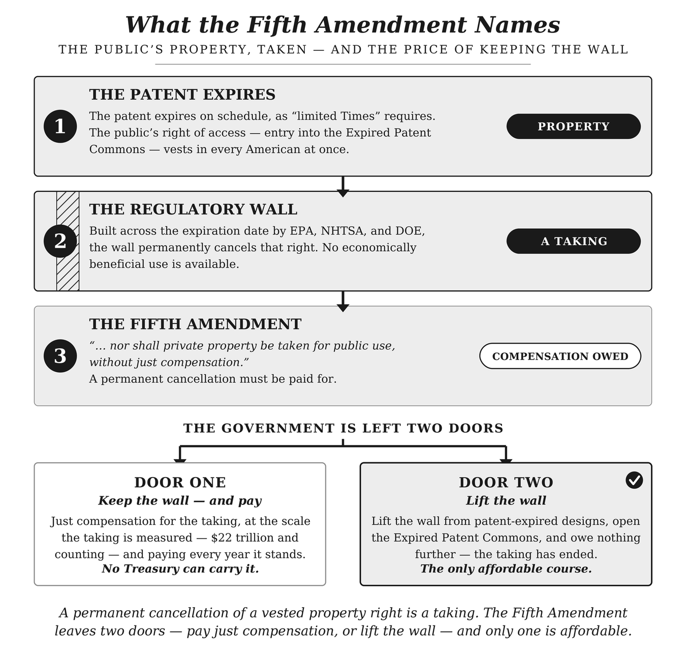
How a Remake Is Built and Certified
4 minutes| Why this is in front of you |
|---|
| Administrability is where a sympathetic court balks, and this is the chapter written for that moment. It gives a judge a rule that can be stated in a sentence and applied by bodies that already exist — the court identifies the constitutional class, the agencies keep the technical rules, an independent certifier supplies the record, and the remanufacturer bears the risk of error. The passage on early patent lapse is the one to read closely if you are drafting: it forecloses the obvious workaround by which the remedy could be emptied without ever being reversed. And the tort section tells you what your client is still exposed to after a win, which is not nothing. |
This is the answer to the anti-gaming objection, and it is a mechanism chapter rather than a doctrinal one. Its premise is that a favorable ruling is worthless if nobody can say what a remanufacturer must build to and who confirms he did.
The build runs in two steps, and the order is what makes certification possible: the remanufacturer assembles the design as a three-dimensional model, the model is what gets certified, and the physical build is confirmed against the certified model afterward. The full mechanism has four parts — model the design, map it to the original certified platform year, have an independent engineering certifier affirm the model against that year’s federal safety, emissions and energy rules, then confirm the build against the model. A remade light bulb uses the same structure in miniature.
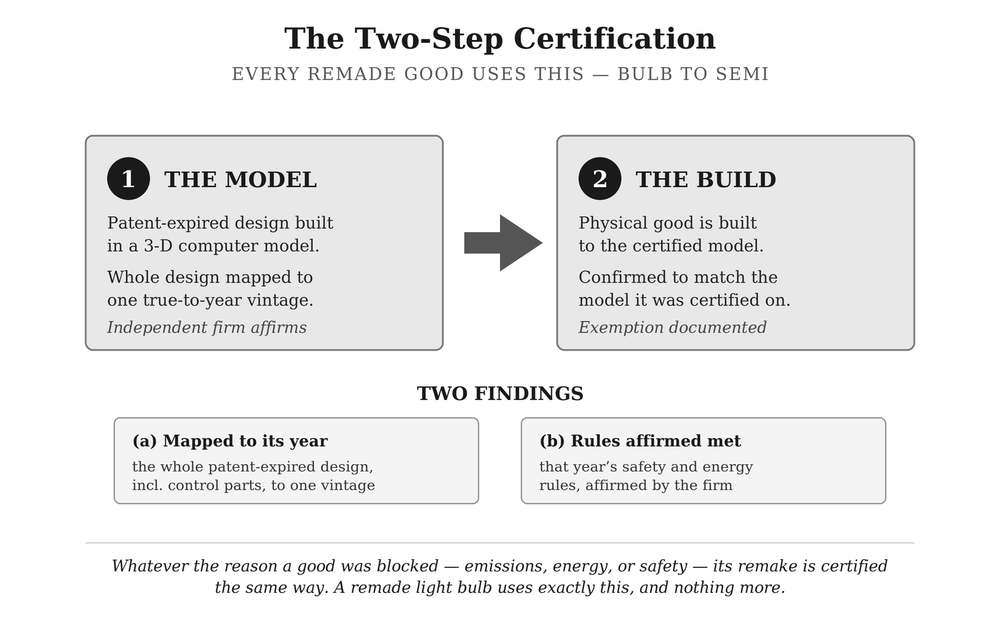
What counts as a faithful remake is stated as a binary rule. A build whose material design elements trace to the expired platform, deviating only for necessary manufacturing substitutions, ordinary replacement materials, or separately lawful improvements, is a platform-year remake. Materially change a regulated feature — architecture, crash structure, emissions system, drivetrain integration, safety system, energy-consuming design — and it is a new design under current standards. The chapter says the boundary exists to keep the remedy from becoming a loophole: the constitutional claim protects the public’s right to build the expired design, not a right to hide a new design inside an old label.
Eligibility turns on two facts and one exclusion. The design must have been sold lawfully to the public and the invention must have entered the public domain — and how the patent ended does not matter, a full twenty-year term and early abandonment for unpaid maintenance fees arriving at the same place. The reasoning is defensive, and it forecloses an obvious workaround: if eligibility required a full term, the agencies could empty the commons by ratcheting so relentlessly that no patent is ever carried to term. The single exclusion is a product pulled from the market while under patent as unsafe.
The certification argument rests on the observation that the United States does not pre-approve most vehicles: manufacturers self-certify against the federal motor vehicle safety standards, and EPA issues certificates of conformity on submitted test data. The proposal adds a layer rather than inventing a concept. The independent certifier must be independent of the remanufacturer’s production decision, professionally qualified, subject to record-retention duties, and exposed to legal consequences for false certification; it may be paid by the remanufacturer, as compliance professionals often are, but its duty runs to the standard rather than the client. It answers three questions — faithful remake, nothing still patented, platform-year standards met — and a no to any one denies platform-year treatment. The chapter argues the resulting floor is higher than the original’s in five respects, the first being that the original’s safety deal was self-certification and the remake’s is not.
The candor is in a section the chapter titles for what it cannot deliver. A favorable ruling lifts the federal wall; it does not tell a state what its tort law must hold. Federal safety standards as a rule do not displace state tort law, and the federal motor-vehicle statute says in terms that meeting a federal standard does not exempt anyone from common-law liability. Platform-year certification is therefore strong evidence of non-defectiveness and admissible anywhere, but it is evidence and not immunity: some states treat era-conformity as a full defense, some as a rebuttable presumption, some as one factor, and at least one recognizes no such defense at all. The chapter’s answer is that the tort system already judges era-relative products every day — the restored vintage car, the rebuilt industrial press, the refurbished appliance — and that how each state answers is not something a single ruling should try to dictate.
The closing section is the one a court would find useful. The certification test does not change with the body that orders it; only who applies it varies. Six paths are walked — the Supreme Court adopting platform-year parity, a remand, congressional codification, agency implementation, a novel judicial remedy, and at the outer edge an executive-order institution on the Peace Corps model of 1961, on which the book does not rest. Two candid notes travel with them: platform-year parity is flagged as the book’s inference about the soundest remedy rather than a holding any court has entered, and the agency path carries the structural worry that the agencies built the wall and have an interest in the status quo.
The Policy Framework After a Successful Ruling
4¾ minutes| Why this is in front of you |
|---|
| A court will want to know what it is being asked to set in motion, and this chapter is the answer in the form a remedial order could reference. The distinction it insists on is the one that matters to your filing: legs one and two follow from the holding and need no legislature, so the relief you request does not depend on Congress acting. That the chapter classifies its own third leg as outside the ruling — and says the constitutional remedy stands without it — is a discipline worth noting, because a framework that needed a tariff to work would not be a judicial remedy at all. Hatch-Waxman is the closest thing in American law to the outcome being requested, and the chapter’s account of why this case needs no equivalent legislative bargain is the argument to have ready when the government says this belongs to Congress. |
A policy chapter, explicitly not a doctrinal one, beginning on the morning after the ruling. Its design is a three-legged stool, and the line it keeps sharp throughout is which legs a court installs and which it cannot.
The first leg is the grandfather exemption, which answers the question of standard. A remanufactured patent-expired design is held to the federal safety and energy-efficiency standards in force in the platform year it mimics — not the patent filing year, not a year chosen for convenience, but the year the design was certified and Americans lived to those rules. The chapter argues this is defensible rather than arbitrary because a platform-year standard was once the law of the land, and it points out that the federal government already grandfathers older designs to older standards: 49 U.S.C. § 30112(b)(9) exempts a vehicle at least twenty-five years old from the Federal Motor Vehicle Safety Standards, and the Low Volume Motor Vehicle Manufacturers Act permits up to 325 replica vehicles a year resembling designs at least twenty-five years old without full current-year crash compliance. One boundary is drawn plainly: the ruling promises the engineering, not the name. “F-150” stays Ford’s, a remanufacturer sells under its own mark, and Ford itself could sell remanufactured trucks as F-150s if it chose. This leg requires no act of Congress; it is the holding stated as a rule a remanufacturer can build to.
The second leg is independent certification, which answers the question of proof, and the chapter’s argument here is structural rather than technical. Two tests at the gate — nothing still under patent, and the platform-year standards met — and the decisive question is who holds the gate. It must not be EPA, NHTSA or the Department of Energy, because a gate in the hands of the wall’s builders could be narrowed by rule, slowed by procedure, or quietly closed. The model offered is Underwriters Laboratories, founded in 1894 and certifying American manufactured goods for over a century without being an arm of any government. This leg also requires no legislature.
The third leg is where the chapter parts company with itself, deliberately. An import provision — a tariff, a quantitative restriction on finished remanufactured patent-expired imports, or both — rests on Article I trade powers and is a political follow-on that no court orders. The evidence for needing it comes from the book’s own three-tier map: fifty-eight percent blocked, fifteen hindered, twenty-seven flowing — and of those twenty-seven points, only about five reach Americans as goods made by American workers while the other twenty-two arrive as imports. Where the wall was never built, the remanufacturing went overseas anyway. The pocket calculator supplies the cautionary case: a collapse so total that calculator manufacturing survived here only as a product line inside diversified firms. The target is stated as a number and a ceiling — a remanufactured pickup, semi-truck or tractor built in an American factory at roughly a third the price of the new equivalent, not a tenth, because one-third is the price that leaves an American industry standing.
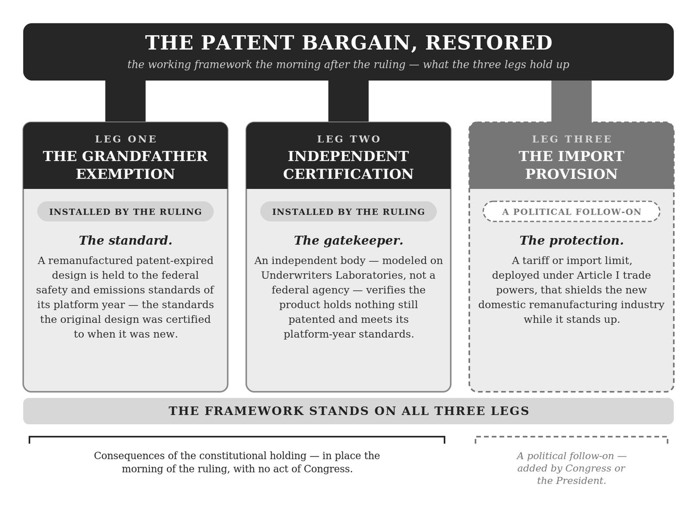
Sequencing is treated as structure rather than housekeeping. If the remedy waited on the tariff, the constitutional remedy would depend on Congress, and a Congress that never acted could hold the wall up indefinitely — the agencies’ wall finding in legislative inaction exactly the permanence a court had just denied it. So the court acts first. The chapter then concedes the cost of its own ordering: between the ruling and any import provision the remedy leaves an interval of foreign competition, which it declines to call a failure of the remedy.
The American precedent is Hatch-Waxman, set out because the framework is not an experiment without a record. Before 1984 the FDA required a full New Drug Application from every generic entrant, so the patent expired while the regulatory wall behind it did not, and generics were nineteen percent of American prescriptions. The Drug Price Competition and Patent Term Restoration Act created the Abbreviated New Drug Application on a bioequivalence showing; Watson Pharmaceuticals was founded that same year in direct response, Mylan grew into a global manufacturer, and Teva built an American presence it had not had. Generics are roughly ninety percent of prescriptions today at about a quarter of brand prices, with cumulative savings above two trillion dollars on the most credible industry estimates. The chapter names the one difference and argues it cuts in the remedy’s favor: the pharmaceutical wall was statutory, so Congress had to buy the originators’ consent with patent-term restoration, while the durable-goods wall is agency rulemaking on top of constitutional patent rights — which is what puts it within reach of a court.
Two closing arguments extend the framework past the buyer of remanufactured goods. The first is that competition disciplines the price of new goods too, at a conservative fifteen percent in inflation-adjusted terms, grounded in the pre-1970 record rather than in theory. The second is a measurement proposal built on the VIN and the public registration record — which the chapter concedes reaches only as far as registration does, leaving riding mowers, refrigerators and light bulbs uncounted, a problem it hands to the government and the marketplace rather than solving.
Objections Considered
8¼ minutes| Why this is in front of you |
|---|
| This is the adversary’s brief, written by the author. If you are evaluating whether to take the case, read entries five through seven first — Andrus, Eldred and Golan are the decisions a government brief will lead with, and the chapter neither hides them nor claims they are distinguishable on every ground. Entry four tells you how to plead: two prongs, not three, with equality argued inside each. Entry thirteen is the practical one, and it is the reason this case has not been filed — the fee structure, not the merits, is what has kept the firms best equipped to bring it from bringing it, and it identifies the plaintiff types for whom the arithmetic works. |
Thirteen objections drawn from economists, lawyers, libertarian friends and populist skeptics since previews of the argument began circulating in March 2025, each stated in the form its author raised it and answered. Correspondents are anonymized at their request. Eleven are answered here; two are routed to chapters in Volume 1 that already answer them in full. This is the chapter to read first if your instinct is that the argument is too good to be sound.
The first objection is the strongest legal one and it begins with a concession. A patent has never conferred immunity from regulation — Patterson v. Kentucky (1878), Webber v. Virginia (1880), Aronson v. Quick Point Pencil Co. (1979) — and the book does not argue otherwise. What follows is a three-condition test that narrows the claim considerably: the technology must once have been patented, the regulation must have the effect of preserving the incumbent’s position past expiration rather than imposing a floor that would have been imposed regardless, and the mechanism must be statutorily designed to be irreversible in the manner of 42 U.S.C. § 6295, New Source Review, or the motor-vehicle safety ratchet. A law-professor hypothetical — a 1971 ban on a patented in-dash coffee-maker, challenged by a remanufacturer in 1995 — is worked through and the remanufacturer correctly loses on both prongs. The first condition does more work than it appears: a never-patented design draws no Patent Clause claim at all, because no bargain was struck for it.
The second is the levitating-carpet case, put by a federal appeals lawyer, and the chapter concedes it entirely for the class of rules it describes. A 1940 rule requiring blinking navigation lights on a 1930 carpet is additive: the design survives, both makers can build it after 1950, and no monopoly outlasts the term. The book’s argument is about the rule the example excludes — the constitutive rule, which cannot be satisfied by supplementing the expired design but only by replacing it, so that a faithful copy can be built by no one, the original maker included. The fork is stated as a single test: can the expired design carry the rule, or does the rule forbid the design as such? Where the answer is the former, the chapter says the objection wins and the book raises no complaint.
The third is the sharpest attack on the Patent Clause prong, pressed through four rounds of correspondence by a skeptical ex-lawyer friend of the author: the Clause releases each assembly, not a right to rebuild the truck. Again the concession comes first — the throttle control may be used in any new design, and the wall does not block that. The answer is the aggregation principle, supported by Aro Manufacturing Co. v. Convertible Top Replacement Co. (1961) on combination patents, and the consideration argument: on a components-only reading, a patent on an assembly of already-public components would deliver to the public at expiration a parts list it already had, which is not the exchange the Clause recites. The chapter then does something unusual and marks the seam: the Patent Clause supplies the promise that the integrated invention passes to the public, the affirmative right to remanufacture is an inference the book draws and asks a court to confirm, and the Takings Clause is where the argument hands off.
The fourth answers a question this page has to be clear about, because it governs how the case is pleaded. If equality is doing so much work, why is it not a third prong? Because as a standalone Fifth Amendment claim it would break: Williamson v. Lee Optical of Oklahoma (1955) supplies the conceivable-purpose standard that federal economic classifications almost always survive, and the wall has stated rationales a court will find conceivable. The rational-basis-with-bite escape of United States Department of Agriculture v. Moreno (1973), City of Cleburne (1985) and Romer v. Evans (1996) is real but narrow, and the chapter says the animus framing does not fit a record in which the agencies targeted product categories rather than a disfavored class. Equality is therefore internal to both prongs and a suspender in neither — a litigant who insists on three, the chapter says, has confessed that the first two are not load-bearing.
The fifth and sixth take the two adverse precedents head-on, and both are introduced as real and adverse. Andrus v. Allard (1979) held unanimously that a ban on the commercial sale of lawfully held eagle feathers was not a taking because possession survived; the chapter answers in three parts, of which the strongest is structural — Andrus would have to be re-litigated only if takings were the book’s only theory, and it is not. Eldred v. Ashcroft (2003), decided seven to two, upheld a twenty-year copyright extension against a “limited Times” challenge, with Justice Breyer’s dissent arguing the extended term was worth 99.8 percent of a perpetual copyright and the majority answering on the calendar. The distinction offered is that Eldred tested a calendar adjustment within the limited-Times range and was never asked whether Congress may use a separate enumerated power to defeat the bargain entirely.
The seventh answers the case most adverse to the whole thesis, and it answers it on a categorical ground rather than a factual one. Golan v. Holder (2012) upheld a statute restoring American copyright to foreign works already in the United States public domain, rejecting six to two the premise that the Constitution renders the public domain untouchable by Congress — in an opinion that calls the provision “the Copyright and Patent Clause.” The chapter concedes the language is not narrow, then distinguishes two populations that share only a label: the Expired Patent Commons, where a bargain was completed, and everything never protected at all, where none was struck. The Golan petitioners themselves conceded the restored works had received a United States term of exactly zero, so those works never entered the expired-term commons and never received the Clause’s protection. Kewanee Oil Co. v. Bicron Corp. (1974) follows in the same entry: trade secrecy may withhold an invention forever, but its holder forgoes the grant and gets no right against reverse engineering, so Kewanee bars misappropriation and never manufacture. The chapter flags the load-bearing step as its own — no court has yet been asked whether Congress’s power over the default public domain reaches the bargained-for one.
The tenth is the economic objection — open the commons and the original maker dies — answered with counterexamples and an explicit limitation. The Rubik’s Cube mechanism patent expired in 2000 and cheap competitors entered; in 2022 the genuine article still sold nearly six million units for $75.3 million, holding forty-two percent of its category, and the brand was acquired in 2021 for fifty million dollars. The chapter immediately concedes that a cube carries brand nostalgia a brake caliper does not, and rests only on the narrower point that one counterexample defeats a categorical claim. Velcro after 1978 and Zippo after 1953 follow, and then the deeper proof: Ford ran a dealer rebuilt-engine exchange as early as 1934, Detroit Diesel and Cummins formalized factory remanufacturing in 1966, and Singer kept its lead for generations after the sewing-machine patents lapsed in 1877.
The eleventh is the one an evidence-minded reader wants: has anyone actually been stopped? The answer names the prohibitions rather than describing them — 49 U.S.C. §§ 30112 and 30115 on manufacture and certification, Clean Air Act § 203 at 42 U.S.C. § 7522 and 40 C.F.R. § 86.1848-10 on the certificate of conformity, with emissions measured per vehicle rather than as a fleet average — and distinguishes them from the corporate-average fuel-economy standard, a fleet penalty which as of the statute enacted in July 2025 carries a maximum of zero. The wall that matters is a ban, not a fine. The decisive evidence is that the experiment was run by Congress itself: the 2015 Low Volume Motor Vehicle Manufacturers Act waived the federal safety standards for up to 325 replicas per manufacturer per year, and a decade later essentially no gasoline replicas have been built, because the same statute required the builder to install a current-model-year certified engine. Congress waived the safety bar, codified the emissions wall into the very exemption meant to relieve it, and the commons stayed shut.
The twelfth maps what can lawfully outlast a utility patent, and it is the entry to send an intellectual-property colleague. The ninety-five-year figure is real — 17 U.S.C. § 302(c) — and attached to the wrong object, since copyright does not reach useful articles and the legislative history chose the automobile by name as its illustration, with Star Athletica v. Varsity Brands (2017) governing separable features. Design patents run fifteen years from grant under 35 U.S.C. § 173 for applications filed on or after May 13, 2015, fourteen before. Trademark runs indefinitely but protects the source identifier. Trade dress is the one instrument that can reach the shape of the thing, as Ferrari S.P.A. v. Roberts (1991) showed and the 2020 FCA-Mahindra Roxor proceeding confirmed — the International Trade Commission found trade-dress infringement, Mahindra restyled the front end, and the redesigned vehicle resumed sale mechanically unchanged. TrafFix Devices v. Marketing Displays (2001) supplies the boundary: an expired utility patent is strong evidence that the features it claimed are functional, and functional features cannot be trade dress. The conclusion is the chapter’s sharpest framing of its own case — the intellectual-property statutes let the design go; the regulatory statutes do not.
The thirteenth is the one most books would omit. Once the argument is public, the author cannot control who files it, and the chapter says so without claiming a control it lacks. It then explains why a damages version is structurally weaker: the Administrative Procedure Act’s waiver of sovereign immunity is limited to relief other than money damages, pushing a compensation claim to the Tucker Act where a six-year limitations period reaches at most six of the fifty-six years; the manufacturers who received the transfer did nothing unlawful and a lobbying-based antitrust theory meets Noerr-Pennington; a damages class has no common counterfactual price; and under Hunt as construed in United Food and Commercial Workers Union Local 751 v. Brown Group (1996), an association’s damages action running solely to its members is barred for want of standing — so a firm that persuades an association to sue for money has disqualified its own client. The fee arithmetic follows, and it explains the interval since June 2024: the Equal Access to Justice Act caps recoverable fees at $125 an hour adjusted for cost of living, limits recovery by net worth, and denies fees entirely where the government’s position was substantially justified — a defense that is unusually strong on a question of first impression. The chapter closes by conceding a genuine cost of publication: a damages case brought badly and lost could produce language a later court reads as governing the injunctive theory. The author accepts the risk, on the ground that holding the argument private has produced fifty-six years of nothing.
Reason the Constitutional Argument Yourself: The Open-Book Examination
5 minutes| Why this is in front of you |
|---|
| This is the fastest way to test the argument without reading the book, and it is the one part of the case you can run yourself before deciding whether to spend more time on it. What makes it worth an hour is the file, not the results: thirty-four Supreme Court holdings with operative language and source links, the adverse authorities included, both advocates’ cases stated fairly, and the regulatory provisions quoted verbatim — which is a research memorandum whatever you conclude from it. Treat the model answers as the chapter tells you to, which is as evidence about whether the conclusion follows from the authorities rather than as authority of any kind. The closing request on the exam page is addressed to you specifically: a short statement from a practicing attorney who finds the argument sound, implying no agreement with the book’s conclusions. |
The closing invitation, and the one chapter on this page you can verify for yourself in an afternoon. Its premise is that a reader need not take the author’s word or wait for the lawyers: the authorities are public, and the same neutral materials can be put to independent reasoning engines built by different companies on different data. The chapter is careful about what that proves. A model is not a court, answers vary between systems and versions and runs, and the point is not agreement but convergence — whether the conclusion follows from the authorities or only from the way the author tells the story.
Part One is the examination itself, built like a trial in three parts: the law, then two advocates given equal space, then the verdict. The law is thirty-one numbered Supreme Court holdings from Patterson v. Kentucky (1878) to Sheetz v. County of El Dorado (2024), each with a source URL and its operative language, plus Chevron, Loper Bright and West Virginia v. EPA in a separate section on reviewability — thirty-four cases in all. What matters for credibility is the composition: the adverse authorities are in the file. Andrus, Eldred, Williamson, Patterson, Webber and Aronson sit beside Graham, Singer, Scott Paper, Sears, Bonito Boats and Kimble, the regulatory facts are quoted from the C.F.R. and the U.S. Code rather than characterized, and the defense of the present system is a real defense rather than a straw one.
Four diagrams travel inside the file and are read as materials, not decoration.
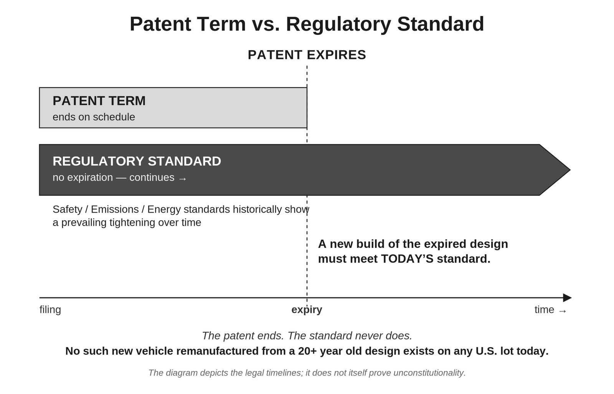
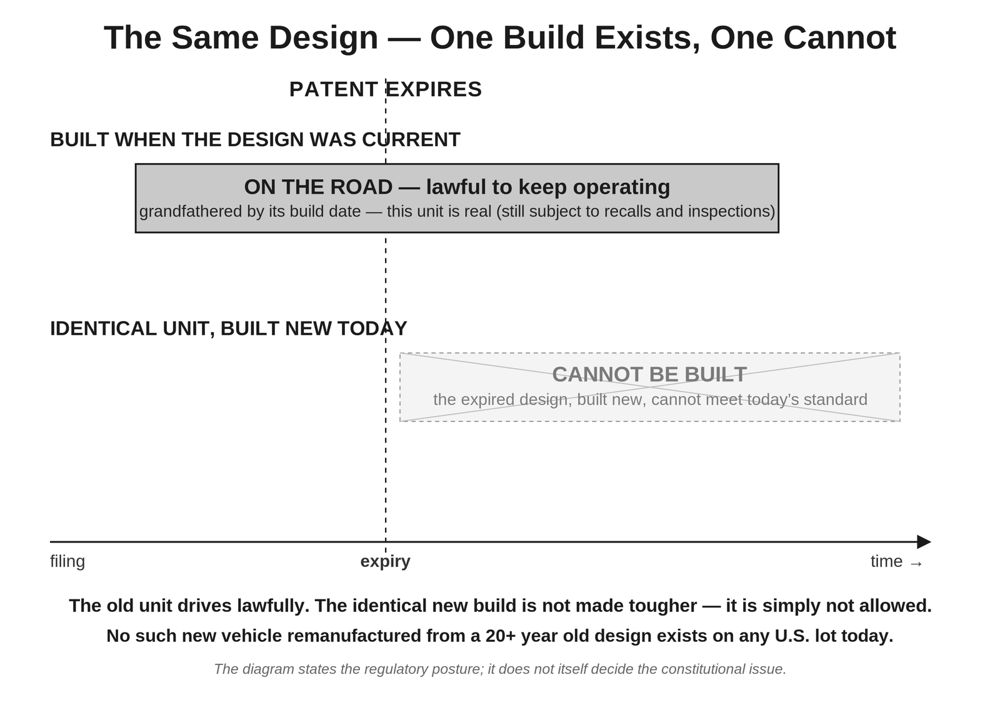
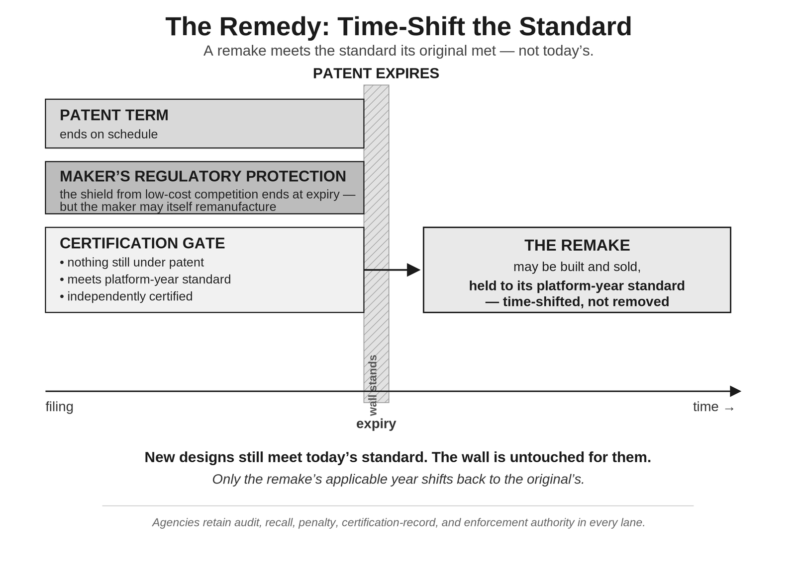
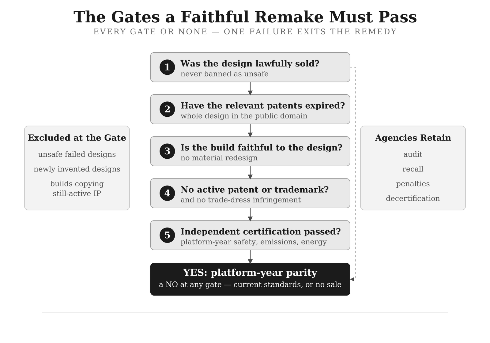
Two standards tables carry the compliance gap in dated, citable form. Each compares a platform as it was lawfully built against what a faithful new copy of that same platform must satisfy in the year its patents expire, twenty years later. Every expiry year shown is 2020 or later, so every copy must meet Tier 3, in force since model year 2017, which no Tier 1 or Tier 2 platform was engineered to meet. An arrow entry means the safety standard was not required at build and was required by the model year shown; a dash means it was already required at build. The chapter states that the tracked requirements are not exhaustive and explains one deliberate omission: automatic emergency braking, FMVSS 127, finalized in 2024 and codified for model year 2030, is left out because as of 2026 it remains under petition for reconsideration and its compliance date may change.
| Filed | Patents expire | Built-to emissions | Must meet at expiry | TPMS (FMVSS 138) | ESC (FMVSS 126) | Side-impact (FMVSS 214) |
|---|---|---|---|---|---|---|
| 2000–2003 | 2020–2023 | Tier 1 | Tier 3 | → req. MY08 | → req. MY12 | → req. MY13 |
| 2004–2007 | 2024–2027 | Tier 2 | Tier 3 | → req. MY08 | → req. MY12 | → req. MY13 |
| 2008–2011 | 2028–2031 | Tier 2 | Tier 3 | — | → req. MY12 | → req. MY13 |
| 2012 | 2032 | Tier 2 | Tier 3 | — | — | → req. MY13 |
| Filed | Patents expire | Built-to emissions | Must meet at expiry | TPMS (FMVSS 138) | ESC (FMVSS 126) | Side-impact (FMVSS 214) |
|---|---|---|---|---|---|---|
| 2000–2003 | 2020–2023 | Tier 1 | Tier 3 | → req. MY08 | → req. MY12 | → req. MY14 |
| 2004–2007 | 2024–2027 | Tier 2 | Tier 3 | → req. MY08 | → req. MY12 | → req. MY14 |
| 2008–2012 | 2028–2032 | Tier 2 | Tier 3 | — | → req. MY12 | → req. MY14 |
| 2013 | 2033 | Tier 2 | Tier 3 | — | — | → req. MY14 |
Part Two is the method. Seven prompts, run in one continuous session per model, in a fixed order that settles neutral and conditional ground before reaching the contested point. Five demand a committed TRUE/FALSE final line; one asks the model to predict the Supreme Court’s vote as a split totaling nine; one asks it to choose a remedy from a fixed menu of five. A model that will not commit is recorded as indecisive and set aside. The answers are read for coherence rather than scored: Prompts 5 and 6 lock together, and a model that answers both the same way has contradicted itself and is disqualified for incoherence, with its other answers uncounted. Prompt 7 is the capstone, asking whether a cognizable constitutional injury arises at all, and “F” is the favorable answer.
The author’s own run, dated 28 June 2026, is reported in a matrix of eleven models — seven closed-book generalists, two retrieval-grounded systems, one the chapter labels as ideologically configured by its maker, and one noted as routing through a shifting mix of engines. All eleven answered “F” on Prompt 7. The chapter does not round that up: ten answered so initially, and GLM 5.2 answered “T” before reversing under questioning, with the reversal described and its full transcript published rather than summarized away. The predicted Supreme Court splits ranged from 1–8 to 6–3, and five of the eleven predicted five or more justices for a constitutional remedy — which the chapter reports as 45 percent rather than as a majority. On the remedy menu, paths (a) and (c) tied at five each, with no winner. Every underlying answer file is linked, and the complete replies to Prompt 7 are published as Appendix C, so the coherence reading can be checked rather than taken on trust.
The chapter’s own verdict on the exercise is the flattest sentence in either volume: whatever the machines conclude, they decide nothing. The Constitution does not bend to a consensus of language models and would not bend to their dissent. What the exercise offers is smaller — a way for any reader, on any day, to sit the same examination with the same open book.
What Volume 2 Carries That Is Not Summarized
Six chapters of the companion volume have no summary on these pages, and none is omitted for weakness. They sit past the point where a reader decides whether the constitutional argument is sound, which is the only question these summaries are built to serve.
Why You Want to Be the Plaintiff and Hybrid Legislative Voting are written for a reader already persuaded — the first for one deciding whether to bring the case, the second for the problem of keeping a remedy from being undone by the next Congress. The Hindered Sector is a stated tangent: the classes where the wall raises cost without foreclosing the design outright.
Three more are set after a win. If a President Read This Book and the two Five Years On chapters describe what the plaintiffs and the household recover once the wall time-shifts. They are the part of the book that asks what the country looks like afterward, and nothing in them is load-bearing for the case itself.
The full text of every one of them is in the companion volume.
The request
That is the argument, as completely as three pages can carry it. What follows is the only thing being asked in return.
As I move toward publishers, the recurring question is whether a non-lawyer can be trusted to handle the constitutional argument responsibly. A few words from additional lawyers would settle that better than anything I could say myself. If, after your review, you are comfortable doing so, would you be willing to write a brief paragraph — two or three sentences — stating simply that the work is well-researched and merits serious consideration and a public hearing?
I am asking only for that — a statement of seriousness, not agreement with my conclusions. If you find it warrants more, you are of course free to say so, but there is no expectation. Entirely your own words, reflecting only what you can honestly stand behind.
Any attorney who contacts me can receive the complete Author’s Review manuscript for their review — as a PDF, as a printed trade paperback (available at cost, including shipping), or as an EPUB — whichever suits how you prefer to read.
If this argument belongs in front of someone you know who practices law, I would be grateful if you would pass it along. The request has its own page, written so that it can be forwarded on its own.
RoleighMartin@proton.me · x.com/RoleighMartin
To talk it over by phone, text first at 952-905-0822. I keep Eastern time.